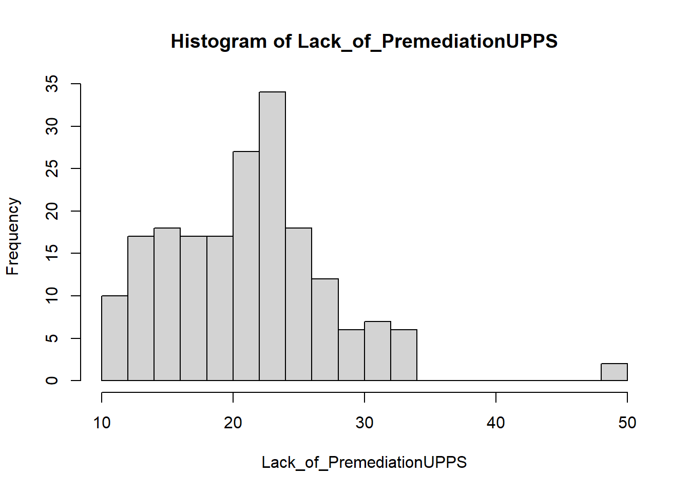
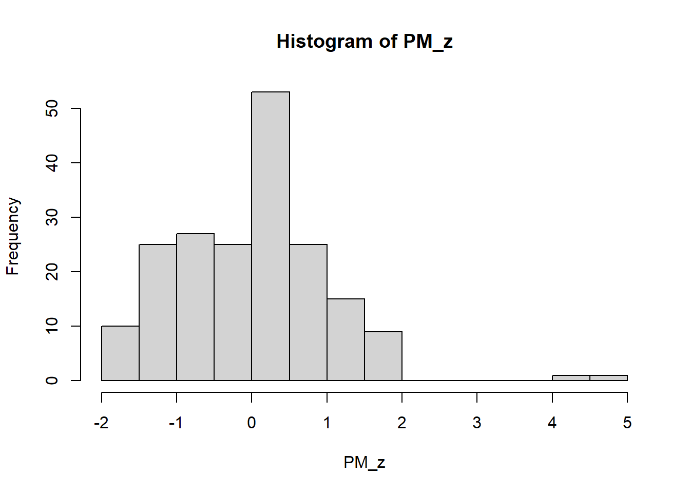
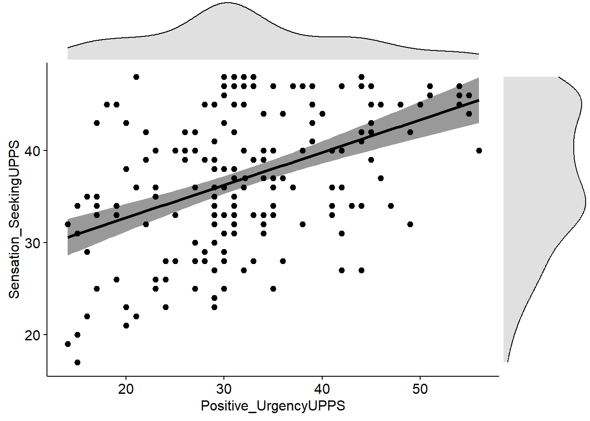
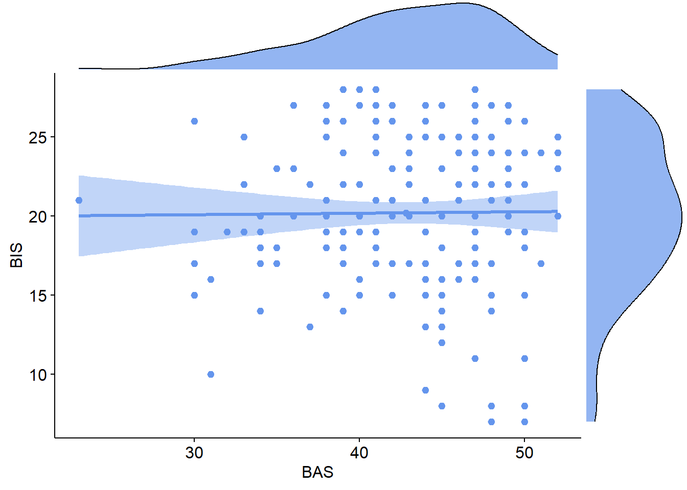

df <- read.csv("lec_dokha_example_data_withoutliers.csv")PS71020_Unit2_Homework
NoteSome general notes about the weekly homeworks
Each week will have an associated homework worksheet in a similar format to this. You should go through the worksheet during your own time to get extra practice. Try to answer the worksheet questions in your own words however. Model answers will be available within the document itself but please try to answer the questions properly before revealing them. A full R script for the analysis will be published VLE page from Fridays after the labs so you can compare your own script. If your question relates specifically to the lecture content or the homework sheets, please contact Peter Holland by email or use the forum on the VLE page.
Homework Learning Outcomes:
1 - Use RStudio to screen data for missing values
2 - Use RStudio to exclude cases with missing values
3 - Use RStudio to perform mean imputation
4 - Use z-scores to detect outliers
5 - Use ggplot2 and extensions to create compound plots
SECTION A. THE DATA SET
The dataset for the homework this week is adapted from one of the datasets used as an example in the corresponding lecture. A sample of 191 university students resident in Dubai were measured on their impulsivity-related personality traits, their use of conventional cigarettes and their use of a nicotine-based local product called dokha. The questionnaires include an impulsivity measure called the UPPS-P, and a measure of behavioural approach and inhibition, the BIS/BAS scales. The researchers were planning to examine the extent to which the personality variables predict smoking behaviour, and to examine how these relationships might be moderated by socio-demographic factors. Prior to the focal analyses planned for the dataset, the dataset needs to be screened and cleaned.
As usual we will load the data set using the read.csv() function:
The first thing we will do is to check for missing data in the data set.
What code does R use for missing data?
NA
SECTION B. MISSING DATA
What is one function we can use to summarise a data set and find the number of missing values in each variable? It produces the output shown below
summary(), in this case we would use summary(df).
Gender Age Education MaritalStatus
Min. :1.000 Min. :18.00 Min. :1.000 Min. :1.000
1st Qu.:1.000 1st Qu.:19.00 1st Qu.:1.000 1st Qu.:1.000
Median :1.000 Median :22.00 Median :1.000 Median :1.000
Mean :1.471 Mean :22.51 Mean :1.723 Mean :1.099
3rd Qu.:2.000 3rd Qu.:25.50 3rd Qu.:2.000 3rd Qu.:1.000
Max. :2.000 Max. :30.00 Max. :6.000 Max. :4.000
EthnicOrigin Religion Income Dokha1
Min. :1.000 Min. :1.000 Min. :0.000 Min. :0.0000
1st Qu.:1.000 1st Qu.:1.000 1st Qu.:0.000 1st Qu.:0.0000
Median :1.000 Median :2.000 Median :1.000 Median :1.0000
Mean :2.712 Mean :2.445 Mean :1.743 Mean :0.5812
3rd Qu.:4.000 3rd Qu.:2.000 3rd Qu.:4.000 3rd Qu.:1.0000
Max. :9.000 Max. :6.000 Max. :5.000 Max. :1.0000
dokha_total2 Fagerstrom_total Negative_UrgencyUPPS Lack_of_PremediationUPPS
Min. :0.00 Min. : 0.00 Min. : 13.00 Min. :11.00
1st Qu.:0.00 1st Qu.: 0.00 1st Qu.: 25.25 1st Qu.:17.00
Median :0.00 Median : 0.00 Median : 32.00 Median :22.00
Mean :2.67 Mean : 1.89 Mean : 35.12 Mean :21.66
3rd Qu.:6.00 3rd Qu.: 3.00 3rd Qu.: 38.00 3rd Qu.:25.00
Max. :8.00 Max. :10.00 Max. :444.00 Max. :50.00
NAs :1 NAs :1
Lack_of_PerseveranceUPPS Sensation_SeekingUPPS Positive_UrgencyUPPS
Min. :10.00 Min. :17.00 Min. :14.00
1st Qu.:16.00 1st Qu.:32.00 1st Qu.:26.25
Median :20.00 Median :37.00 Median :31.00
Mean :19.91 Mean :37.01 Mean :32.13
3rd Qu.:23.00 3rd Qu.:43.75 3rd Qu.:39.00
Max. :31.00 Max. :48.00 Max. :56.00
NAs :1 NAs :1 NAs :1
DRIVE FUN RR BAS BIS
Min. : 6.00 Min. : 4.00 Min. :12.00 Min. :23.00 Min. : 7.0
1st Qu.:11.00 1st Qu.:11.00 1st Qu.:16.00 1st Qu.:39.00 1st Qu.:17.0
Median :12.00 Median :13.00 Median :18.00 Median :44.00 Median :20.0
Mean :12.31 Mean :12.64 Mean :17.87 Mean :42.82 Mean :20.2
3rd Qu.:14.00 3rd Qu.:15.00 3rd Qu.:20.00 3rd Qu.:47.00 3rd Qu.:24.0
Max. :16.00 Max. :16.00 Max. :20.00 Max. :52.00 Max. :28.0
NAs :2 NAs :2 NAs :2 NAs :2 NAs :2 What is the extent of missing data in the dataset?
We seem to have some missing values, with 4 variables missing one value and 5 missing two values. However, at this stage it isn’t clear if these are across multiple participants or only two participants who are missing multiple data points.
R contains several useful functions for finding missing data. The simplest is we can find the location of NAs in a single variable, using the function is.na().
is.na(df$DRIVE) [1] FALSE FALSE FALSE FALSE FALSE FALSE FALSE FALSE TRUE FALSE FALSE FALSE
[13] FALSE FALSE FALSE FALSE FALSE FALSE FALSE FALSE FALSE FALSE FALSE FALSE
[25] FALSE FALSE FALSE FALSE FALSE FALSE FALSE FALSE FALSE FALSE FALSE FALSE
[37] FALSE FALSE FALSE FALSE FALSE FALSE FALSE FALSE FALSE FALSE FALSE FALSE
[49] FALSE FALSE FALSE FALSE FALSE FALSE FALSE FALSE FALSE FALSE FALSE FALSE
[61] FALSE FALSE FALSE FALSE FALSE FALSE FALSE FALSE FALSE FALSE FALSE FALSE
[73] FALSE FALSE FALSE FALSE FALSE FALSE FALSE FALSE FALSE FALSE FALSE FALSE
[85] FALSE FALSE FALSE FALSE FALSE FALSE FALSE FALSE FALSE FALSE FALSE FALSE
[97] FALSE FALSE FALSE FALSE FALSE FALSE FALSE FALSE FALSE FALSE FALSE FALSE
[109] FALSE FALSE FALSE FALSE FALSE FALSE FALSE FALSE FALSE FALSE FALSE FALSE
[121] FALSE FALSE FALSE FALSE FALSE FALSE FALSE FALSE FALSE FALSE FALSE FALSE
[133] FALSE FALSE FALSE FALSE FALSE FALSE FALSE FALSE FALSE FALSE FALSE FALSE
[145] FALSE FALSE FALSE FALSE FALSE FALSE FALSE FALSE FALSE FALSE FALSE FALSE
[157] FALSE FALSE FALSE FALSE FALSE FALSE FALSE FALSE FALSE FALSE FALSE FALSE
[169] FALSE FALSE FALSE FALSE FALSE FALSE FALSE FALSE FALSE FALSE FALSE FALSE
[181] FALSE FALSE FALSE FALSE FALSE TRUE FALSE FALSE FALSE FALSE FALSEHowever, this list of TRUE or FALSE values (logical values), is not the most reader friendly for identifying their position. We can use a second function called which() that tells us the positions of any true values.
which(is.na(df$DRIVE))[1] 9 186This not tells us positions 9 and 186 of the df$DRIVE variables are NAs, this corresponds to rows 9 and 186 of df.
A way to check for complete cases of data (rows with no NA values), we can use a function called complete.cases():
which(complete.cases(df)) [1] 1 2 3 4 5 6 7 8 10 11 12 13 14 15 16 17 18 19
[19] 20 21 22 23 24 25 26 27 28 29 30 31 32 33 34 35 36 37
[37] 38 39 40 41 42 43 44 45 46 47 48 49 50 51 52 53 54 55
[55] 56 57 58 59 60 61 62 63 64 65 66 67 68 69 70 71 72 73
[73] 74 75 76 77 78 79 80 81 82 83 84 85 86 87 88 89 90 91
[91] 92 93 94 95 96 97 98 99 100 101 102 103 104 105 106 107 108 109
[109] 110 111 112 113 114 115 116 117 118 119 120 121 122 123 124 125 126 127
[127] 128 129 130 131 132 133 134 135 136 137 138 139 140 141 142 143 144 145
[145] 146 147 148 149 150 151 152 153 154 155 156 157 158 159 160 161 162 163
[163] 164 165 166 167 168 169 170 171 172 173 174 175 176 177 178 179 180 181
[181] 182 183 184 185 187 188 189 190 191If we look carefully through the list of the row numbers of the complete cases we can see that 9 and 186 are missing. So it seems like we have two participants that account for all of our missing data.
It would make it easier for us to change the code to return the row numbers of participants that are not complete cases. We can do this by adding a single character to our previous code. What is it? Also write the line of code that would create the following output For a hint see Section B.
The ! flips TRUE and FALSE values to become the opposite. Importantly it leaves NA values as NA. The code would be: which(!complete.cases(df))
[1] 9 186Given the scale of missing data what do you think would be a good option for handling it in this case?
Given the size of the dataset here and the extent of missing data, it is unlikely that any solution we undertake will have a major effect on the study results. The simplest option would be to remove the cases, or we could impute the values.
We have seen in the Lab Section B how to use subset() to select only certain data.
What code would we need to create a new data set called dfClean with only the complete cases included?
dfClean <- subset(df,complete.cases(df))
Instead we are going to use mean imputation here and replace all the missing values in each variable with the mean of that variable. If we wanted to do this for a single variable we could use the code below, I’m first going to create a copy of our data set called dfImp so we leave the original intact.
dfImp <- df
dfImp$DRIVE[is.na(dfImp$DRIVE)] <- mean(dfImp$DRIVE, na.rm = TRUE)This might look complex but if we break it down into individual steps we can understand.
On the right side of the assign operator (<-) we have mean(dfImp$DRIVE, na.rm = TRUE). The reason we can’t simply use mean(dfImp) is because if there are any NA values in that variable mean() will simply return a NA:
mean(df$DRIVE)[1] NAInstead, using the code below tell the mean() function to ignore any missing values.
mean(df$DRIVE, na.rm = TRUE)[1] 12.31217So the right side of our code was calculating the mean (while ignoring missing values). What is the left side dfImp$DRIVE[is.na(dfImp$DRIVE)] doing? So if we simply run this on it’s own we can see it returns the two NA values in df$DRIVE.
df$DRIVE[is.na(df$DRIVE)][1] NA NAWhen we combine these two parts, the code finds the NA values in dfImp$Drive and then overwrites them with the mean of that variable. This is mean imputation. We could do this one by one for each variable but that is generally not considered good practice in code to list out 20 lines of code.
Instead we can use a function called lapply() which applies the same function to a list of variables, if you give it a dataframe as an input it will apply the same function to each column. Don’t worry if this seems complex at the moment we will use functions like this more often as we progress through the course.
dfImp <- df # keep the raw data untouched
sum(is.na(dfImp)) #count the number of NAs[1] 15dfImp[] <- lapply(dfImp, function(x) {
x[is.na(x)] <- mean(x, na.rm = TRUE)
x
})
sum(is.na(dfImp)) #count the number of NAs again[1] 0Just as we did in the lab session with outliers it would also be good to label which rows of the dfImp data set we performed mean imputation on. This would later enable us to quickly include/exclude these cases from analysis if we wanted to check the effects of our process. We can do this using the follwing code:
dfImp$imputed_row <- !complete.cases(df)
which(dfImp$imputed_row) # check that we have labelled the right rows with a TRUE[1] 9 186However, there is one potential problem in the way we have processed the data. Before we performed mean imputation, we did not first check for outliers.
Why might this cause a problem?
Extreme values in a variable can bias the mean in that direction. If we had a few large outliers our computed mean might not be an accurate reflection of the clean data and therefore out mean imputation would contain this bias. If using mean imputation make sure to screen for outliers first.
SECTION C. DETECTING OUTLIERS WITH Z-SCORES
We are going to do this the df$Lack_of_PremediationUPPS variable. Let’s first plot a histogram of the data to get an initial visualisation.
hist(dfImp$Lack_of_PremediationUPPS, breaks = 20, main = "Histogram of Lack_of_PremediationUPPS", xlab = "Lack_of_PremediationUPPS")
It seems like we have at least one extreme value that is near 50, but it isn’t clear exactly how many data points are there. We could check this using a manual threshold and find out:
which(dfImp$Lack_of_PremediationUPPS>40)[1] 96 114I’ve used the same which() function as earlier to ask R to return the positions of any values in df$Lack_of_PremediationUPPS that are greater than (the > symbol) 40. The value of 40 was purely based of choosing a value in the histogram that separated the data.
How many outliers do we have based on this criterion of >40?
Two, in rows of 96 and 114 of df.
However, manually defining values like this is not best practice unless there are clear theoretical grounds for choosing them (i.e. impossible/implausible values for Age, reaction time, or score on a scale).
Instead we can use z-scores as a way of standardising or scaling our data.
See Section from Pre-sesional tutorial 3 for another example of calculating z-scores that explains how to do this step by step. Here we are going to use the function scale() that will do it for us in once go.
PM_z <- scale(dfImp$Lack_of_PremediationUPPS) #calculate z-scores for the Negative_UrgencyUPPS variable.Taking a z-score means standardising (or scaling) the data so that it now has a mean of 0 and a standard deviation of 1. This makes it then easier to compare to other variables/data sets and to apply the same cut-off values for outliers to all variables.
We can check the mean and standard deviation of the new variable:
mean(PM_z)[1] 1.681791e-16sd(PM_z)[1] 1We can see the mean is very close to 0 and the standard deviation is exactly 1.
See Section from Pre-sesional tutorial 3 for an explanation of numbers in E notation. The number 1.681791e-16 means:
format(1.681791e-16, scientific = FALSE)[1] "0.0000000000000001681791"So is very very close to 0.
If we plot the histogram of our PM_z variable we can see that the general shape is very similar to before but the data is centered on the mean of 0 and each point is now expressed as the number of standard deviations it is away from that mean.
hist(PM_z, breaks = 20)
A common threshold to choose when using z-scores is less than -3.29 or greater than +3.29. (These are the z-scores associated with a p-value less than .001.)
If we wanted to do this for our PM_z variable we could use this:
which(abs(PM_z) > 3.29 )[1] 96 114The abs() function makes all the numbers positive so values of -2 become +2, but values of +2 stay as +2. This means we can check for <-3.29 and >3.29 at the same time.
We can see that using this rule has returned the same rows (96 and 114) as we identified earlier.
We can use some slightly more advanced code to check all variables in one go and get R to return the names and positions of any outliers exceeding these limits.
#create a vector with the names of the variables we want to check
vars <- c("Negative_UrgencyUPPS", "Lack_of_PremediationUPPS", "BAS", "FUN")
#scale all of them at the same time and assign to a matrix z
z <- scale(dfImp[vars])
#
which(abs(z) > 3.29, arr.ind = TRUE) row col
[1,] 11 1
[2,] 15 1
[3,] 96 2
[4,] 114 2
[5,] 157 3
[6,] 157 4Which rows of which variables are outliers according the to abs(z)>3.29 rule?
Rows 11 and 15 in Negative_UrgencyUPPS, rows 96 and 114 in Lack_of_PremediationUPPS, and row 157 in BAS and FUN.
One thing to keep in mind is that the z-score method assumes that the data is roughly normally distributed, in very skewed data it can pick up the tails of the distribution which might not be real outliers.
SECTION D. COMPOUND PLOTS
To visualise linearity, normality and homoscedasticity in a pair of variables is possible by creating separate plots. However, for doing this all in one plot we can use compound plots. These can be built using base R functions but some packages can make things much simpler.
See Section E from Lab 1 for some more information on packages.
In this case we are going to use a function called ggscatterhist() from a package called ggpubr. There are a lot of packages that start with gg and they are mainly extensions to a package called ggplot2 which is the most widely used for plotting in R.
Before we can use the functions from this package we need to load it’s functions into Rs memory:
library(ggpubr)Loading required package: ggplot2You will also see that it loaded the package ggplot2 because some of the functions in ggpubr require other functions in ggplot2, this is called dependency between packages. R should normally handle dependencies for you and load any required packages automatically.
The code below produces a scatter graph of Positive_UrgencyUPPS and Sensation_SeekingUPPS, and places the histograms in the margins.
ggscatterhist(dfImp, x = "Positive_UrgencyUPPS", y = "Sensation_SeekingUPPS",
add = "reg.line",
conf.int = TRUE,
margin.params = list(fill = "lightgray"))
What code do you think you would need to produce the following plot?

ggscatterhist(dfImp, x = "BAS", y = "BIS", add = "reg.line", conf.int = TRUE, color = "cornflowerblue", margin.params = list(fill = "cornflowerblue"))
Do you think these variables are normally distributed? Linearly related? Homoscedastic?
Normality: both show a mild negative skew. Linearity: The trend looks to be a straight line but there isn’t really a relationship. Homoscedasticity: The vertical spread of BIS, increases slightly as values of BAS increase. The spread is visually wider to the right hand side of the plot.
In this case none of these violations are severe enough to prevent us analysing the data but we should still report them all for reproducibility.